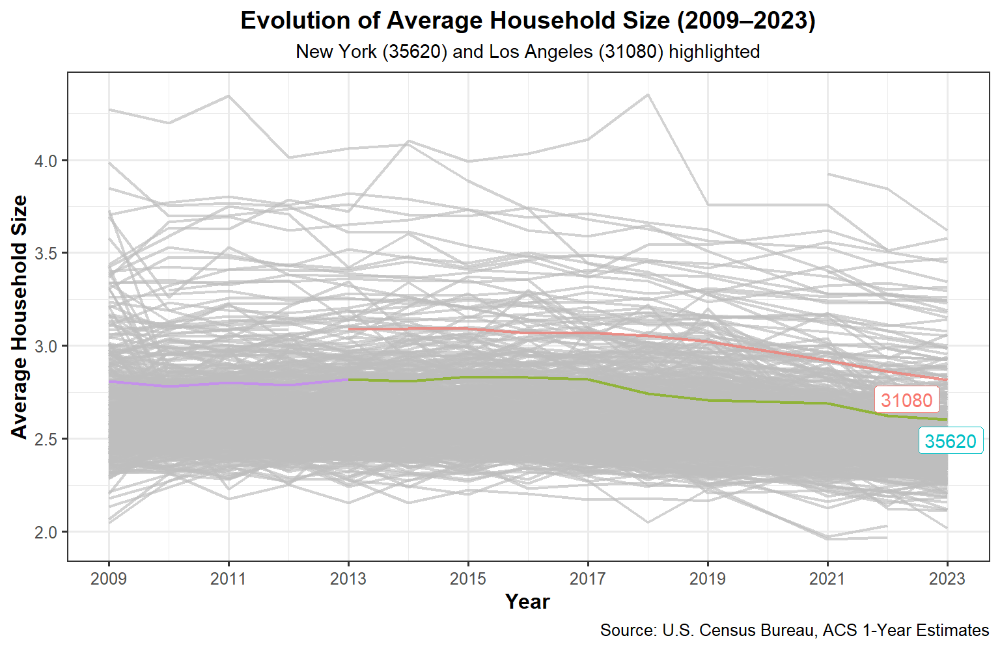

This project explores the dynamics between housing growth and rent burden across U.S. metropolitan areas using data from the U.S. Census Bureau (ACS) and Bureau of Labor Statistics (BLS). By combining demographic, income, and construction permit data, the analysis investigates how new housing development influences affordability and population trends over time. Through the construction of standardized indices for rent burden and housing growth, as well as the creation of a composite measure, the project identifies cities exhibiting “YIMBY” (Yes In My Backyard) characteristics — regions where increased housing supply has coincided with reduced rent pressures and sustained population growth. Visualizations and data transformations in R (tidyverse, ggplot2, tidycensus) provide a data-driven perspective on housing policy outcomes and urban development patterns. ## Section Overview
In this section:
Construct rent burden and housing growth metrics from ACS and BLS data.
Standardize both indicators to a 0–100 scale for comparability.
Visualize trends and relationships between rent burden, housing growth, and population change.
Identify CBSAs showing “YIMBY” outcomes — high initial rent burden, declining rents, population growth, and strong housing development.
Interpret results to understand how housing supply influences affordability across U.S. cities.
Develop a concise policy brief summarizing the key findings, highlighting data-driven evidence on housing growth and affordability. The brief serves as an “elevator pitch” for proposed legislation supporting sustainable housing development, with hypothetical congressional sponsors representing major urban centers such as Houston, TX and New York, NY.
# A tibble: 7,279 × 4
GEOID NAME household_income year
<dbl> <chr> <dbl> <dbl>
1 10140 Aberdeen, WA Micro Area 36345 2009
2 10180 Abilene, TX Metro Area 42931 2009
3 10300 Adrian, MI Micro Area 45640 2009
4 10380 Aguadilla-Isabela-San Sebasti?n, PR Metro Area 13470 2009
5 10420 Akron, OH Metro Area 47482 2009
6 10500 Albany, GA Metro Area 36218 2009
7 10540 Albany-Lebanon, OR Micro Area 47669 2009
8 10580 Albany-Schenectady-Troy, NY Metro Area 57677 2009
9 10700 Albertville, AL Micro Area 37284 2009
10 10740 Albuquerque, NM Metro Area 46824 2009
# ℹ 7,269 more rows
# A tibble: 7,279 × 4
GEOID NAME monthly_rent year
<dbl> <chr> <dbl> <dbl>
1 10140 Aberdeen, WA Micro Area 650 2009
2 10180 Abilene, TX Metro Area 712 2009
3 10300 Adrian, MI Micro Area 645 2009
4 10380 Aguadilla-Isabela-San Sebasti?n, PR Metro Area 363 2009
5 10420 Akron, OH Metro Area 723 2009
6 10500 Albany, GA Metro Area 624 2009
7 10540 Albany-Lebanon, OR Micro Area 761 2009
8 10580 Albany-Schenectady-Troy, NY Metro Area 833 2009
9 10700 Albertville, AL Micro Area 579 2009
10 10740 Albuquerque, NM Metro Area 726 2009
# ℹ 7,269 more rows
# A tibble: 7,279 × 4
GEOID NAME population year
<dbl> <chr> <dbl> <dbl>
1 10140 Aberdeen, WA Micro Area 71797 2009
2 10180 Abilene, TX Metro Area 160266 2009
3 10300 Adrian, MI Micro Area 99837 2009
4 10380 Aguadilla-Isabela-San Sebasti?n, PR Metro Area 342495 2009
5 10420 Akron, OH Metro Area 699935 2009
6 10500 Albany, GA Metro Area 164238 2009
7 10540 Albany-Lebanon, OR Micro Area 116584 2009
8 10580 Albany-Schenectady-Troy, NY Metro Area 857592 2009
9 10700 Albertville, AL Micro Area 90399 2009
10 10740 Albuquerque, NM Metro Area 856216 2009
# ℹ 7,269 more rows
# A tibble: 7,279 × 4
GEOID NAME households year
<dbl> <chr> <dbl> <dbl>
1 10140 Aberdeen, WA Micro Area 27759 2009
2 10180 Abilene, TX Metro Area 58052 2009
3 10300 Adrian, MI Micro Area 36835 2009
4 10380 Aguadilla-Isabela-San Sebasti?n, PR Metro Area 91805 2009
5 10420 Akron, OH Metro Area 281769 2009
6 10500 Albany, GA Metro Area 60101 2009
7 10540 Albany-Lebanon, OR Micro Area 43953 2009
8 10580 Albany-Schenectady-Troy, NY Metro Area 336492 2009
9 10700 Albertville, AL Micro Area 32651 2009
10 10740 Albuquerque, NM Metro Area 334647 2009
# ℹ 7,269 more rows
# A tibble: 7,279 × 4
GEOID NAME households year
<dbl> <chr> <dbl> <dbl>
1 10140 Aberdeen, WA Micro Area 27759 2009
2 10180 Abilene, TX Metro Area 58052 2009
3 10300 Adrian, MI Micro Area 36835 2009
4 10380 Aguadilla-Isabela-San Sebasti?n, PR Metro Area 91805 2009
5 10420 Akron, OH Metro Area 281769 2009
6 10500 Albany, GA Metro Area 60101 2009
7 10540 Albany-Lebanon, OR Micro Area 43953 2009
8 10580 Albany-Schenectady-Troy, NY Metro Area 336492 2009
9 10700 Albertville, AL Micro Area 32651 2009
10 10740 Albuquerque, NM Metro Area 334647 2009
# ℹ 7,269 more rows
Data Acquisition
This project uses data primarily from the U.S. Census Bureau and the Bureau of Labor Statistics (BLS). The Census Bureau conducts multiple ongoing surveys in addition to the decennial census, the most important being the American Community Survey (ACS), which continuously tracks household, demographic, and economic indicators across the country.
To simplify access and ensure consistency, data was downloaded and cleaned using the tidycensus R package. All analyses are performed at the Core-Based Statistical Area (CBSA) level — geographic units that represent metropolitan or micropolitan regions surrounding a central urban core. For example, the New York-Newark-Jersey City, NY-NJ CBSA encompasses the wider New York metropolitan region.
Additionally, data from the Bureau of Labor Statistics (BLS) was integrated to provide employment and income context using the North American Industry Classification System (NAICS) codes. These combined datasets enable a comprehensive view of how housing, income, and population dynamics interact across urban regions.
Data Integration and Initial Exploration
Now that all datasets have been successfully downloaded, cleaned, and merged, this step focuses on performing an initial analysis to become familiar with the structure, variables, and relationships within the data. The goal here is not to produce final insights, but rather to build fluency with the tables and ensure a solid understanding of what information is available.
Question 1
Which CBSA (by name) permitted the largest number of new housing units in the decade from 2010 to 2019 (inclusive)?
Show code
library(dplyr)library(lubridate)library(scales)# 1) Aggregate permits for 2010–2019 by CBSApermits_agg <- PERMITS |>filter(between(year, 2010, 2019)) |>group_by(CBSA) |>summarise(total_units =sum(new_housing_units_permitted, na.rm =TRUE), .groups ="drop")# 2) Lookup table: latest CBSA name per GEOID (avoids duplicates over time)cbsa_lookup <- HOUSEHOLDS |>arrange(GEOID, year) |>group_by(GEOID) |>slice_tail(n =1) |>ungroup() |>select(GEOID, NAME)# 3) Attach name and select the top CBSAlargest_new_housing_CBSA <- permits_agg |>left_join(cbsa_lookup, by =c("CBSA"="GEOID")) |>mutate(NAME =coalesce(NAME, as.character(CBSA))) |>slice_max(total_units, n =1, with_ties =FALSE)# 4) Helper scalars for inline printingtop_name <- largest_new_housing_CBSA$NAMEtop_units <- largest_new_housing_CBSA$total_units
The CBSA that permitted the largest number of new housing units from 2010 to 2019 was Houston-Pasadena-The Woodlands, TX Metro Area, with a total of 482,075 units.
Question 2
In what year did Albuquerque, NM (CBSA Number 10740) permit the most new housing units?
Show code
# 1) Filter data for Albuquerque, NM (CBSA 10740)albuquerque_housing <- PERMITS |>filter(CBSA ==10740) |>group_by(year) |>summarise(total_new_units =sum(new_housing_units_permitted, na.rm =TRUE), .groups ="drop")# 2) Identify the year(s) with the highest number of new housing unitsalbuquerque_peak_year <- albuquerque_housing |>slice_max(total_new_units, n =1, with_ties =TRUE)# 3) Helper variables for inline displaypeak_year <- albuquerque_peak_year$yearpeak_units <- albuquerque_peak_year$total_new_units
The year in which Albuquerque, NM (CBSA 10740) permitted the most new housing units was 2021, with a total of 4,021 new units.
Question 3
Which state (not CBSA) had the highest average individual income in 2015?
The state(s) with the highest average individual income in 2015: DC, with $33,232.88 per person.
Question 4
Data scientists and business analysts are recorded under NAICS code 5182. What is the last year in which the NYC CBSA had the most data scientists in the country?
Show code
library(dplyr)library(scales)# BLS winners by year for NAICS 5182 (Data scientists & business analysts)winners_5182 <- WAGES %>%filter(INDUSTRY ==5182, grepl("^C", FIPS)) %>%# keep CBSA-level rows onlymutate(std_cbsa =paste0(FIPS, "0")) %>%# normalize: e.g., C3562 -> C35620group_by(YEAR) %>%slice_max(EMPLOYMENT, n =1, with_ties =FALSE) %>%ungroup()# NYC std idnyc_std <-"C35620"nyc_last <- winners_5182 %>%filter(std_cbsa == nyc_std) %>%slice_max(YEAR, n =1, with_ties =TRUE)nyc_year <- nyc_last$YEARnyc_emp <- nyc_last$EMPLOYMENT
NYC (CBSA 35620) most recently led the nation in NAICS 5182 in 2015, with 18,922 employed.
Question 5
What fraction of total wages in the NYC CBSA was earned by people employed in the finance and insurance industries (NAICS code 52)? In what year did this fraction peak?
Show code
library(dplyr)library(stringr)library(scales)# Build NAICS_table for NYC CBSA from WAGES (CBSA-level rows use FIPS like "C3562")NAICS_table <- WAGES %>%filter(FIPS =="C3562") %>%# NYC CBSAselect(YEAR, INDUSTRY, TOTAL_WAGES, EMPLOYMENT)# 1) Total wages in NYC by year (all industries)total_wages_by_year <- NAICS_table %>%group_by(YEAR) %>%summarise(total_wages_all =sum(TOTAL_WAGES, na.rm =TRUE), .groups ="drop")# 2) Finance & Insurance (NAICS 52*) wages by yearfin52_wages_by_year <- NAICS_table %>%filter(str_starts(as.character(INDUSTRY), "52")) %>%# sector 52 and its subcodesgroup_by(YEAR) %>%summarise(total_wages_52 =sum(TOTAL_WAGES, na.rm =TRUE), .groups ="drop")# 3) Fraction of total wages from NAICS 52 each yearfin52_share_by_year <- fin52_wages_by_year %>%inner_join(total_wages_by_year, by ="YEAR") %>%mutate(fin52_share = total_wages_52 / total_wages_all)# 4) Peak year(s)fin52_peak <- fin52_share_by_year %>%slice_max(fin52_share, n =1, with_ties =TRUE)# Helper scalars for inline printingpeak_years <-paste(fin52_peak$YEAR, collapse =", ")peak_share <-percent(fin52_peak$fin52_share[1])
Fraction of total wages in the NYC CBSA earned in Finance & Insurance (NAICS 52) peaked in 2021 at 16%.
Initial Visualizations
Monthly Rent vs. Average Household Income (2009)
This plot shows how monthly rent relates to average household income across CBSAs in 2009. A fitted trend helps reveal the overall association.
`geom_smooth()` using formula = 'y ~ x'
Total Employment vs. Health Care & Social Assistance (NAICS 62), Over Time
This faceted scatter shows, for each year, how total employment relates to employment in NAICS 62 by CBSA. The linear trend per panel makes the year-to-year evolution visible.
Show code
library(dplyr)library(ggplot2)library(scales)library(stringr)# Keep CBSA-level rows (FIPS starts with "C") and normalize to std_cbsa if neededWAGES_named <- WAGES |>dplyr::filter(str_starts(FIPS, "C")) |>dplyr::mutate(std_cbsa =paste0(FIPS, "0"))# Total employment by CBSA-year (all industries)general_employment_cbsa <- WAGES_named |>dplyr::group_by(std_cbsa, YEAR) |>dplyr::summarise(total_employment =sum(EMPLOYMENT, na.rm =TRUE), .groups ="drop")# Health care & social assistance (NAICS 62) employment by CBSA-yearhealth_employment_cbsa <- WAGES_named |>dplyr::filter(INDUSTRY ==62) |>dplyr::group_by(std_cbsa, YEAR) |>dplyr::summarise(total_employment_health =sum(EMPLOYMENT, na.rm =TRUE), .groups ="drop")# Join the twotable_cbsa_employment <- dplyr::inner_join(general_employment_cbsa, health_employment_cbsa,by =c("std_cbsa", "YEAR"))ggplot(table_cbsa_employment,aes(x = total_employment, y = total_employment_health)) +geom_point(alpha =0.35) +geom_smooth(method ="lm", se =FALSE) +facet_wrap(~ YEAR, ncol =4, scales ="free") +scale_x_continuous(labels = scales::label_number(scale_cut = scales::cut_short_scale()),expand =expansion(mult =c(0, 0.05))) +scale_y_continuous(labels = scales::label_number(scale_cut = scales::cut_short_scale())) +labs(title ="Health Care & Social Assistance vs. Total Employment Across CBSAs (2009–2023)",x ="Total Employment (All Industries)",y ="Employment in Health Care & Social Assistance (NAICS 62)",caption ="Source: BLS QCEW Annual Averages") +theme_bw(base_size =11) +theme(plot.title =element_text(face ="bold", size =13, hjust =0.5))
Evolution of Average Household Size Over Time
This line plot shows average household size by CBSA over time, with NYC (35620) and Los Angeles (31080) highlighted for emphasis.
Show code
library(dplyr)library(ggplot2)library(gghighlight)# Compute average household size by CBSA-yearavg_household_size <- POPULATION |>dplyr::select(GEOID, NAME, year, population) |>dplyr::inner_join(HOUSEHOLDS |> dplyr::select(GEOID, year, households),by =c("GEOID", "year")) |>dplyr::mutate(avg_household_size = population / households)nyc_la_ids <-c(35620, 31080)ggplot(avg_household_size,aes(x = year, y = avg_household_size, group = GEOID, color = NAME)) +geom_line(alpha =0.7, linewidth =0.8) +gghighlight(GEOID %in% nyc_la_ids, use_direct_label =TRUE) +labs(title ="Evolution of Average Household Size (2009–2023)",subtitle ="New York (35620) and Los Angeles (31080) highlighted",x ="Year",y ="Average Household Size",color ="CBSA",caption ="Source: U.S. Census Bureau, ACS 1-Year Estimates") +scale_x_continuous(breaks =seq(2009, 2023, 2)) +theme_bw(base_size =12) +theme(legend.position ="bottom",plot.title =element_text(face ="bold", size =14, hjust =0.5),plot.subtitle =element_text(size =11, hjust =0.5),axis.title =element_text(face ="bold"))

Rent Burden Metric & Standardization
In this step: 1. We construct a rent-to-income metric per CBSA/year; 2. Standardize it two ways—by-year min–max (0–100) to compare metros within the same year, and global scales (long-term baseline = 100 and global min–max 0–100) to compare across years; 3. Identify CBSAs with highest/lowest rent burden over the period. We also show an example table for a specific CBSA.
Interpretation of Rent Burden Trends (Miami–Fort Lauderdale CBSA 33100)
Between 2009 and 2018, the rent-to-income ratio in the Miami–Fort Lauderdale metropolitan area remained relatively stable, ranging from 28% to 29%, indicating that households consistently spent nearly one-third of their income on rent.
However, the Rent Burden Index (0–100) fluctuated considerably, reflecting changes relative to other CBSAs each year.
The index was around 72 in 2009, dipped to 62 in 2012 and 2014, and reached its peak of 81.6 in 2015, suggesting that Miami’s rent burden was among the highest in the country that year.
The moderate decrease afterward (to ~64 by 2018) indicates slight improvement, possibly due to income growth or slower rent increases.
Overall, Miami remained a high-rent-burden metro area throughout the decade, with minor year-to-year shifts influenced more by national relative comparisons than by large local changes in the rent-to-income ratio itself. ## Global scales (long-term baseline = 100; global min–max 0–100)
Show code
# Long-term national stats (across all CBSAs/years)nat_longterm_mean <-mean(rent_burden$rent_to_income, na.rm =TRUE)nat_longterm_sd <-sd(rent_burden$rent_to_income, na.rm =TRUE)nat_min <-min(rent_burden$rent_to_income, na.rm =TRUE)nat_max <-max(rent_burden$rent_to_income, na.rm =TRUE)# Baseline 100 at long-term national averagerent_burden <- rent_burden %>%mutate(rti_index_longterm100 =100* rent_to_income / nat_longterm_mean)# Global min–max 0–100 across all yearsrent_burden <- rent_burden %>%mutate(rti_minmax_0_100 =100* (rent_to_income - nat_min) / (nat_max - nat_min))
Top/Bottom CBSAs on global index + result tables
Show code
# Extremes by CBSAcbsa_max <- rent_burden %>%group_by(GEOID, NAME) %>%summarise(max_idx =max(rti_minmax_0_100, na.rm =TRUE), .groups ="drop")cbsa_min <- rent_burden %>%group_by(GEOID, NAME) %>%summarise(min_idx =min(rti_minmax_0_100, na.rm =TRUE), .groups ="drop")top5_overall <- cbsa_max %>%slice_max(max_idx, n =5, with_ties =TRUE)bottom5_overall <- cbsa_min %>%slice_min(min_idx, n =5, with_ties =TRUE)# Optional list to highlight in plotsto_highlight <-bind_rows(top5_overall %>%select(GEOID, NAME),bottom5_overall %>%select(GEOID, NAME)) %>%distinct()# Display tablesDT::datatable(top5_overall %>%rename(`CBSA`= GEOID,`Name`= NAME,`Max Rent Burden Index Long Years (0–100)`= max_idx),options =list(searching =FALSE, info =FALSE, pageLength =10),rownames =FALSE) %>% DT::formatRound("Max Rent Burden Index Long Years (0–100)", 2)
Show code
DT::datatable(bottom5_overall %>%rename(`CBSA`= GEOID,`Name`= NAME,`Min Rent Burden Index Long Years (0–100)`= min_idx),options =list(searching =FALSE, info =FALSE, pageLength =10),rownames =FALSE) %>% DT::formatRound("Min Rent Burden Index Long Years (0–100)", 2)
Interpretation — National Extremes
Highest burdens: Puerto Rican metro/micro areas dominate the top-5, with indices up to ~100, indicating households devote a much larger share of income to rent than the U.S. long-term average. Persistent high burdens likely reflect income constraints, disaster recovery pressures, and tight housing markets.
Lowest burdens: Smaller inland CBSAs (e.g., Bismarck, ND; Jefferson City, MO) show indices near 0–2, meaning rent is a small share of income. These regions tend to have moderate rents and incomes sufficient to keep burdens low.
Visualizing “YIMBY” Patterns
Visualization A — Housing growth vs. change in rent burden (CBSA-level)
Interpretation (Visualization A).
This scatter shows how housing supply growth relates to affordability changes. CBSAs in the lower-right quadrant combine above-average housing growth with declining rent burden—the hallmark of a YIMBY outcome. Your labeled candidates (in green) illustrate cases where stronger construction coincided with improved affordability, supporting the idea that more building can help stabilize rents even as demand rises. Areas in the upper-right quadrant still built a lot but saw rent burden increase, implying supply didn’t fully keep pace with demand.
Visualization B — Rent burden (solid) vs. housing growth index (dashed) over time
Interpretation (Visualization B).
This time-series overlay lets you track whether rent burden trends (solid) improve as housing growth (dashed) strengthens. Highlighted CBSAs show a declining rent-to-income trend while the housing growth index rises, meeting key YIMBY criteria. Where the dashed line rises without a corresponding fall in the solid line, supply likely lagged demand (or income growth lagged), so affordability didn’t improve.
🏙️ Policy Brief: The Federal YIMBY Housing Acceleration Act
Encouraging Local Growth Through Smarter Federal Incentives
Note
Objective:
Promote housing affordability and sustainable development by incentivizing municipalities that successfully reduce rent burden while increasing housing supply.
Key Analytical Findings
Our analysis of U.S. Census Bureau (ACS) and Bureau of Labor Statistics (BLS) data reveals a clear divide between YIMBY success stories and NIMBY-constrained cities.
Experienced high housing growth, declining rent burdens, and steady population gains.
These metros demonstrate that balanced housing supply stabilizes rent levels even amid rapid growth.
These metros demonstrate that balanced housing supply stabilizes rent levels even amid rapid growth.
NIMBY Cities — Los Angeles (CA), Miami (FL)
Display persistently high rent burdens and limited new housing development, signaling affordability stress and restrictive zoning barriers.
Proposed Congressional Sponsors
Primary Sponsor: Representative from Austin, TX — a proven YIMBY leader that balanced affordability with growth through streamlined zoning and development incentives.
Co-Sponsor: Representative from Los Angeles, CA — a high-cost, low-supply metro that stands to gain from national housing reform.
Together, they embody the coalition needed to address America’s affordability crisis.
Strategic Labor and Industry Partnerships
Sector
Why It Matters
Projected Impact
Construction (NAICS 23)
Increased development creates jobs and supports union contractors.
Sustained rise in housing starts adds thousands of jobs nationwide.
Education & Public Safety (NAICS 61 & 92)
High rents limit where teachers, firefighters, and police can live.
Lower rent burdens allow essential workers to reside near workplaces.
Recommended Evaluation Metrics
Metric
Description
Interpretation
Rent Burden Index (RBI)
Share of income spent on rent, standardized to a common 0–100 scale across metros.
Higher values = higher cost pressure; falling values over time signal improved affordability.
Housing Growth Rate (HGR)
New housing units permitted relative to population, standardized to 0–100.
A “High-YIMBY” city scores low RBI and high HGR over time, qualifying for federal funding and recognition.
Conclusion
The analysis conducted through this project highlights a clear and data-driven story: cities that embrace YIMBY (“Yes In My Backyard”) housing policies thrive—they sustain population growth, reduce rent burdens, and maintain balanced, inclusive urban development.
By comparing rent burden and housing growth metrics across Core-Based Statistical Areas (CBSAs), we identified metros like Austin, TX, Raleigh, NC, and Boise, ID as examples of YIMBY success. These regions demonstrate how proactive zoning reform, faster permitting, and public–private coordination can yield tangible results in affordability and livability.
Conversely, high-cost metros such as Los Angeles, CA and Miami, FL face growing affordability challenges. Their stagnant housing growth and persistently high rent burdens underscore the urgent need for federal intervention and incentive alignment.
The proposed Federal YIMBY Housing Acceleration Act directly addresses these disparities. It empowers municipalities to expand housing supply, reduce rent pressure, and improve quality of life — all while creating high-quality jobs in construction, real estate, and essential public sectors.
Key takeaway:
> Sustainable growth is not only a matter of economics but of equity. By rewarding municipalities that make measurable progress on housing growth and rent burden reduction, Congress can create a new pathway to affordability for millions of Americans.
In summary, this policy brief demonstrates that YIMBY principles—when supported by clear data and effective incentives—can make housing more affordable, communities more inclusive, and local economies more resilient.
Source Code
---title: "Making Backyards Affordable for All"author: "Maria Cristina Moreno"format: html---# IntroductionThis project explores the dynamics between housing growth and rent burden across U.S. metropolitan areas using data from the U.S. Census Bureau (ACS) and Bureau of Labor Statistics (BLS). By combining demographic, income, and construction permit data, the analysis investigates how new housing development influences affordability and population trends over time. Through the construction of standardized indices for rent burden and housing growth, as well as the creation of a composite measure, the project identifies cities exhibiting “YIMBY” (Yes In My Backyard) characteristics — regions where increased housing supply has coincided with reduced rent pressures and sustained population growth. Visualizations and data transformations in R (tidyverse, ggplot2, tidycensus) provide a data-driven perspective on housing policy outcomes and urban development patterns.## Section OverviewIn this section:1. Construct rent burden and housing growth metrics from ACS and BLS data.2. Standardize both indicators to a 0–100 scale for comparability.3. Visualize trends and relationships between rent burden, housing growth, and population change.4. Identify CBSAs showing “YIMBY” outcomes — high initial rent burden, declining rents, population growth, and strong housing development.5. Interpret results to understand how housing supply influences affordability across U.S. cities.6. Develop a concise **policy brief** summarizing the key findings, highlighting data-driven evidence on housing growth and affordability. The brief serves as an “elevator pitch” for proposed legislation supporting sustainable housing development, with hypothetical congressional sponsors representing major urban centers such as Houston, TX and New York, NY.```{r}#| echo: false#| message: false#| warning: falseif(!dir.exists(file.path("data", "mp02"))){dir.create(file.path("data", "mp02"), showWarnings=FALSE, recursive=TRUE)}ensure_package <-function(pkg){ pkg <-as.character(substitute(pkg))options(repos =c(CRAN ="https://cloud.r-project.org"))if(!require(pkg, character.only=TRUE, quietly=TRUE)) install.packages(pkg)stopifnot(require(pkg, character.only=TRUE, quietly=TRUE))}ensure_package(tidyverse)ensure_package(glue)ensure_package(readxl)ensure_package(tidycensus)get_acs_all_years <-function(variable, geography="cbsa",start_year=2009, end_year=2023){ fname <-glue("{variable}_{geography}_{start_year}_{end_year}.csv") fname <-file.path("data", "mp02", fname)if(!file.exists(fname)){ YEARS <-seq(start_year, end_year) YEARS <- YEARS[YEARS !=2020] # Drop 2020 - No survey (covid) ALL_DATA <-map(YEARS, function(yy){ tidycensus::get_acs(geography, variable, year=yy, survey="acs1") |>mutate(year=yy) |>select(-moe, -variable) |>rename(!!variable := estimate) }) |>bind_rows()write_csv(ALL_DATA, fname) }read_csv(fname, show_col_types=FALSE)}# Household income (12 month)INCOME <-get_acs_all_years("B19013_001") |>rename(household_income = B19013_001)INCOME# Monthly rentRENT <-get_acs_all_years("B25064_001") |>rename(monthly_rent = B25064_001)RENT# Total populationPOPULATION <-get_acs_all_years("B01003_001") |>rename(population = B01003_001)POPULATION# Total number of householdsHOUSEHOLDS <-get_acs_all_years("B11001_001") |>rename(households = B11001_001)HOUSEHOLDS#get_building_permits <-function(start_year =2009, end_year =2023){ fname <-glue("housing_units_{start_year}_{end_year}.csv") fname <-file.path("data", "mp02", fname)if(!file.exists(fname)){ HISTORICAL_YEARS <-seq(start_year, 2018) HISTORICAL_DATA <-map(HISTORICAL_YEARS, function(yy){ historical_url <-glue("https://www.census.gov/construction/bps/txt/tb3u{yy}.txt") LINES <-readLines(historical_url)[-c(1:11)] CBSA_LINES <-str_detect(LINES, "^[[:digit:]]") CBSA <-as.integer(str_sub(LINES[CBSA_LINES], 5, 10)) PERMIT_LINES <-str_detect(str_sub(LINES, 48, 53), "[[:digit:]]") PERMITS <-as.integer(str_sub(LINES[PERMIT_LINES], 48, 53))data_frame(CBSA = CBSA,new_housing_units_permitted = PERMITS, year = yy) }) |>bind_rows() CURRENT_YEARS <-seq(2019, end_year) CURRENT_DATA <-map(CURRENT_YEARS, function(yy){ current_url <-glue("https://www.census.gov/construction/bps/xls/msaannual_{yy}99.xls") temp <-tempfile()download.file(current_url, destfile = temp, mode="wb") fallback <-function(.f1, .f2){function(...){tryCatch(.f1(...), error=function(e) .f2(...)) } } reader <-fallback(read_xlsx, read_xls)reader(temp, skip=5) |>na.omit() |>select(CBSA, Total) |>mutate(year = yy) |>rename(new_housing_units_permitted = Total) }) |>bind_rows() ALL_DATA <-rbind(HISTORICAL_DATA, CURRENT_DATA)write_csv(ALL_DATA, fname) }read_csv(fname, show_col_types=FALSE)}PERMITS <-get_building_permits()PERMITS# NAICS data schemaensure_package(httr2)ensure_package(rvest)get_bls_industry_codes <-function(){ fname <- fname <-file.path("data", "mp02", "bls_industry_codes.csv")if(!file.exists(fname)){ resp <-request("https://www.bls.gov") |>req_url_path("cew", "classifications", "industry", "industry-titles.htm") |>req_headers(`User-Agent`="Mozilla/5.0 (Macintosh; Intel Mac OS X 10.15; rv:143.0) Gecko/20100101 Firefox/143.0") |>req_error(is_error = \(resp) FALSE) |>req_perform()resp_check_status(resp) naics_table <-resp_body_html(resp) |>html_element("#naics_titles") |>html_table() |>mutate(title =str_trim(str_remove(str_remove(`Industry Title`, Code), "NAICS"))) |>select(-`Industry Title`) |>mutate(depth =if_else(nchar(Code) <=5, nchar(Code) -1, NA)) |>filter(!is.na(depth)) naics_table <- naics_table |>filter(depth ==4) |>rename(level4_title=title) |>mutate(level1_code =str_sub(Code, end=2), level2_code =str_sub(Code, end=3), level3_code =str_sub(Code, end=4)) |>left_join(naics_table, join_by(level1_code == Code)) |>rename(level1_title=title) |>left_join(naics_table, join_by(level2_code == Code)) |>rename(level2_title=title) |>left_join(naics_table, join_by(level3_code == Code)) |>rename(level3_title=title) |>select(-starts_with("depth")) |>rename(level4_code = Code) |>select(level1_title, level2_title, level3_title, level4_title, level1_code, level2_code, level3_code, level4_code)write_csv(naics_table, fname) }read_csv(fname, show_col_types=FALSE)}INDUSTRY_CODES <-get_bls_industry_codes()INDUSTRY_CODES#BLS Quarterly Census of Employment and Wagesensure_package(httr2)ensure_package(rvest)get_bls_qcew_annual_averages <-function(start_year=2009, end_year=2023){ fname <-glue("bls_qcew_{start_year}_{end_year}.csv.gz") fname <-file.path("data", "mp02", fname) YEARS <-seq(start_year, end_year) YEARS <- YEARS[YEARS !=2020] # Drop Covid year to match ACSif(!file.exists(fname)){ ALL_DATA <-map(YEARS, .progress=TRUE, possibly(function(yy){ fname_inner <-file.path("data", "mp02", glue("{yy}_qcew_annual_singlefile.zip"))if(!file.exists(fname_inner)){request("https://www.bls.gov") |>req_url_path("cew", "data", "files", yy, "csv",glue("{yy}_annual_singlefile.zip")) |>req_headers(`User-Agent`="Mozilla/5.0 (Macintosh; Intel Mac OS X 10.15; rv:143.0) Gecko/20100101 Firefox/143.0") |>req_retry(max_tries=5) |>req_perform(fname_inner) }if(file.info(fname_inner)$size <755e5){warning(sQuote(fname_inner), "appears corrupted. Please delete and retry this step.") }read_csv(fname_inner, show_col_types=FALSE) |>mutate(YEAR = yy) |>select(area_fips, industry_code, annual_avg_emplvl, total_annual_wages, YEAR) |>filter(nchar(industry_code) <=5, str_starts(area_fips, "C")) |>filter(str_detect(industry_code, "-", negate=TRUE)) |>mutate(FIPS = area_fips, INDUSTRY =as.integer(industry_code), EMPLOYMENT =as.integer(annual_avg_emplvl), TOTAL_WAGES = total_annual_wages) |>select(-area_fips, -industry_code, -annual_avg_emplvl, -total_annual_wages) |># 10 is a special value: "all industries" , so omitfilter(INDUSTRY !=10) |>mutate(AVG_WAGE = TOTAL_WAGES / EMPLOYMENT) })) |>bind_rows()write_csv(ALL_DATA, fname) } ALL_DATA <-read_csv(fname, show_col_types=FALSE) ALL_DATA_YEARS <-unique(ALL_DATA$YEAR) YEARS_DIFF <-setdiff(YEARS, ALL_DATA_YEARS)if(length(YEARS_DIFF) >0){stop("Download failed for the following years: ", YEARS_DIFF, ". Please delete intermediate files and try again.") } ALL_DATA}WAGES <-get_bls_qcew_annual_averages()WAGES HOUSEHOLDS |>group_by()```## Data AcquisitionThis project uses data primarily from the U.S. Census Bureau and the Bureau of Labor Statistics (BLS). The Census Bureau conducts multiple ongoing surveys in addition to the decennial census, the most important being the American Community Survey (ACS), which continuously tracks household, demographic, and economic indicators across the country.To simplify access and ensure consistency, data was downloaded and cleaned using the tidycensus R package. All analyses are performed at the Core-Based Statistical Area (CBSA) level — geographic units that represent metropolitan or micropolitan regions surrounding a central urban core. For example, the New York-Newark-Jersey City, NY-NJ CBSA encompasses the wider New York metropolitan region.Additionally, data from the Bureau of Labor Statistics (BLS) was integrated to provide employment and income context using the North American Industry Classification System (NAICS) codes. These combined datasets enable a comprehensive view of how housing, income, and population dynamics interact across urban regions.{width=100% fig-align="center" fig-alt="Housing Price"}## Data Integration and Initial ExplorationNow that all datasets have been successfully downloaded, cleaned, and merged, this step focuses on performing an initial analysis to become familiar with the structure, variables, and relationships within the data.The goal here is not to produce final insights, but rather to build fluency with the tables and ensure a solid understanding of what information is available.::: {.callout-tip title="Question 1"}Which CBSA (by name) permitted the largest number of new housing units in the decade from 2010 to 2019 (inclusive)?:::```{r}#| label: q1-largest-cbsa-2010-2019#| echo: true#| message: false#| warning: false#| code-fold: true#| code-summary: "Show code"library(dplyr)library(lubridate)library(scales)# 1) Aggregate permits for 2010–2019 by CBSApermits_agg <- PERMITS |>filter(between(year, 2010, 2019)) |>group_by(CBSA) |>summarise(total_units =sum(new_housing_units_permitted, na.rm =TRUE), .groups ="drop")# 2) Lookup table: latest CBSA name per GEOID (avoids duplicates over time)cbsa_lookup <- HOUSEHOLDS |>arrange(GEOID, year) |>group_by(GEOID) |>slice_tail(n =1) |>ungroup() |>select(GEOID, NAME)# 3) Attach name and select the top CBSAlargest_new_housing_CBSA <- permits_agg |>left_join(cbsa_lookup, by =c("CBSA"="GEOID")) |>mutate(NAME =coalesce(NAME, as.character(CBSA))) |>slice_max(total_units, n =1, with_ties =FALSE)# 4) Helper scalars for inline printingtop_name <- largest_new_housing_CBSA$NAMEtop_units <- largest_new_housing_CBSA$total_units```The CBSA that permitted the largest number of new housing units from 2010 to 2019 was **`r top_name`**, with a total of **`r comma(top_units)`** units.::: {.callout-tip title="Question 2"}In what year did Albuquerque, NM (CBSA Number 10740) permit the most new housing units?:::```{r}#| label: q2-albuquerque-max-year#| echo: true#| message: false#| warning: false#| code-fold: true#| code-summary: "Show code"# 1) Filter data for Albuquerque, NM (CBSA 10740)albuquerque_housing <- PERMITS |>filter(CBSA ==10740) |>group_by(year) |>summarise(total_new_units =sum(new_housing_units_permitted, na.rm =TRUE), .groups ="drop")# 2) Identify the year(s) with the highest number of new housing unitsalbuquerque_peak_year <- albuquerque_housing |>slice_max(total_new_units, n =1, with_ties =TRUE)# 3) Helper variables for inline displaypeak_year <- albuquerque_peak_year$yearpeak_units <- albuquerque_peak_year$total_new_units```The year in which Albuquerque, NM (CBSA 10740) permitted the most new housing units was **`r peak_year`**, with a total of **`r scales::comma(peak_units)`** new units.::: {.callout-tip title="Question 3"}Which state (not CBSA) had the highest average individual income in 2015?:::```{r}#| label: q3-highest-state-avg-ind-income-2015#| echo: true#| message: false#| warning: false#| code-fold: true#| code-summary: "Show code"library(dplyr)library(stringr)library(scales)cbsa_2015 <- INCOME %>%filter(year ==2015) %>%select(GEOID, NAME, household_income) %>%inner_join(HOUSEHOLDS %>%filter(year ==2015) %>%select(GEOID, households), by ="GEOID") %>%inner_join(POPULATION %>%filter(year ==2015) %>%select(GEOID, population), by ="GEOID") %>%mutate(total_income_cbsa = household_income * households,state =substr(trimws(sub("^[^,]*,", "", NAME)), 1, 2) )state_2015 <- cbsa_2015 %>%group_by(state) %>%summarise(state_total_income =sum(total_income_cbsa, na.rm =TRUE),state_population =sum(population, na.rm =TRUE),avg_individual_income_2015 = state_total_income / state_population,.groups ="drop" ) %>%arrange(desc(avg_individual_income_2015))top_state <- state_2015 %>%slice_max(avg_individual_income_2015, n =1, with_ties =TRUE)top_state_codes <-paste(top_state$state, collapse =", ")top_state_income <- top_state$avg_individual_income_2015[1]```The state(s) with the highest average individual income in 2015: **`r top_state_codes`**, with **`r dollar(top_state_income)`** per person.::: {.callout-tip title="Question 4"}Data scientists and business analysts are recorded under NAICS code 5182. What is the last year in which the NYC CBSA had the most data scientists in the country?:::```{r}#| label: q4-nyc-most-data-scientists-last-year#| echo: true#| message: false#| warning: false#| code-fold: true#| code-summary: "Show code"library(dplyr)library(scales)# BLS winners by year for NAICS 5182 (Data scientists & business analysts)winners_5182 <- WAGES %>%filter(INDUSTRY ==5182, grepl("^C", FIPS)) %>%# keep CBSA-level rows onlymutate(std_cbsa =paste0(FIPS, "0")) %>%# normalize: e.g., C3562 -> C35620group_by(YEAR) %>%slice_max(EMPLOYMENT, n =1, with_ties =FALSE) %>%ungroup()# NYC std idnyc_std <-"C35620"nyc_last <- winners_5182 %>%filter(std_cbsa == nyc_std) %>%slice_max(YEAR, n =1, with_ties =TRUE)nyc_year <- nyc_last$YEARnyc_emp <- nyc_last$EMPLOYMENT```NYC (CBSA 35620) most recently led the nation in NAICS 5182 in **`r nyc_year`**, with **`r comma(nyc_emp)`** employed.::: {.callout-tip title="Question 5"}What fraction of total wages in the NYC CBSA was earned by people employed in the finance and insurance industries (NAICS code 52)? In what year did this fraction peak?:::```{r}#| label: q5-nyc-finance-insurance-share#| echo: true#| message: false#| warning: false#| code-fold: true#| code-summary: "Show code"library(dplyr)library(stringr)library(scales)# Build NAICS_table for NYC CBSA from WAGES (CBSA-level rows use FIPS like "C3562")NAICS_table <- WAGES %>%filter(FIPS =="C3562") %>%# NYC CBSAselect(YEAR, INDUSTRY, TOTAL_WAGES, EMPLOYMENT)# 1) Total wages in NYC by year (all industries)total_wages_by_year <- NAICS_table %>%group_by(YEAR) %>%summarise(total_wages_all =sum(TOTAL_WAGES, na.rm =TRUE), .groups ="drop")# 2) Finance & Insurance (NAICS 52*) wages by yearfin52_wages_by_year <- NAICS_table %>%filter(str_starts(as.character(INDUSTRY), "52")) %>%# sector 52 and its subcodesgroup_by(YEAR) %>%summarise(total_wages_52 =sum(TOTAL_WAGES, na.rm =TRUE), .groups ="drop")# 3) Fraction of total wages from NAICS 52 each yearfin52_share_by_year <- fin52_wages_by_year %>%inner_join(total_wages_by_year, by ="YEAR") %>%mutate(fin52_share = total_wages_52 / total_wages_all)# 4) Peak year(s)fin52_peak <- fin52_share_by_year %>%slice_max(fin52_share, n =1, with_ties =TRUE)# Helper scalars for inline printingpeak_years <-paste(fin52_peak$YEAR, collapse =", ")peak_share <-percent(fin52_peak$fin52_share[1])```Fraction of total wages in the NYC CBSA earned in Finance & Insurance (NAICS 52) peaked in **`r peak_years`** at **`r peak_share`**.## Initial Visualizations### Monthly Rent vs. Average Household Income (2009)This plot shows how monthly rent relates to average household income across CBSAs in 2009. A fitted trend helps reveal the overall association.```{r}#| label: viz-rent-vs-income-2009#| echo: false#| message: false#| warning: false#| fig-width: 7#| fig-height: 4.5#| code-fold: true#| code-summary: "Show code"library(dplyr)library(ggplot2)library(scales)# Join ACS tables and filter to 2009mr_ahi <- dplyr::inner_join(INCOME, RENT, dplyr::join_by(GEOID, year)) |>dplyr::filter(year ==2009)ggplot(mr_ahi, aes(x = monthly_rent, y = household_income)) +geom_point(alpha =0.35) +geom_smooth(method ="lm", se =FALSE) +labs(title ="Relationship Between Monthly Rent and \n Average Household Income (2009)",subtitle ="Each point represents a CBSA",x ="Monthly Rent (US Dollars)",y ="Average Household Income (US Dollars)",caption ="Source: U.S. Census Bureau, ACS 1-Year Estimates (2009)") +scale_x_continuous(labels = scales::dollar) +scale_y_continuous(labels = scales::dollar) +theme_bw(base_size =12) +theme(plot.title =element_text(face ="bold", size =14, hjust =0.5),plot.subtitle=element_text(size =11, hjust =0.5),axis.title =element_text(face ="bold"))```### Total Employment vs. Health Care & Social Assistance (NAICS 62), Over TimeThis faceted scatter shows, for each year, how total employment relates to employment in NAICS 62 by CBSA. The linear trend per panel makes the year-to-year evolution visible.```{r}#| label: viz-health-vs-total-over-time#| echo: true#| message: false#| warning: false#| fig-width: 8#| fig-height: 6#| code-fold: true#| code-summary: "Show code"library(dplyr)library(ggplot2)library(scales)library(stringr)# Keep CBSA-level rows (FIPS starts with "C") and normalize to std_cbsa if neededWAGES_named <- WAGES |>dplyr::filter(str_starts(FIPS, "C")) |>dplyr::mutate(std_cbsa =paste0(FIPS, "0"))# Total employment by CBSA-year (all industries)general_employment_cbsa <- WAGES_named |>dplyr::group_by(std_cbsa, YEAR) |>dplyr::summarise(total_employment =sum(EMPLOYMENT, na.rm =TRUE), .groups ="drop")# Health care & social assistance (NAICS 62) employment by CBSA-yearhealth_employment_cbsa <- WAGES_named |>dplyr::filter(INDUSTRY ==62) |>dplyr::group_by(std_cbsa, YEAR) |>dplyr::summarise(total_employment_health =sum(EMPLOYMENT, na.rm =TRUE), .groups ="drop")# Join the twotable_cbsa_employment <- dplyr::inner_join(general_employment_cbsa, health_employment_cbsa,by =c("std_cbsa", "YEAR"))ggplot(table_cbsa_employment,aes(x = total_employment, y = total_employment_health)) +geom_point(alpha =0.35) +geom_smooth(method ="lm", se =FALSE) +facet_wrap(~ YEAR, ncol =4, scales ="free") +scale_x_continuous(labels = scales::label_number(scale_cut = scales::cut_short_scale()),expand =expansion(mult =c(0, 0.05))) +scale_y_continuous(labels = scales::label_number(scale_cut = scales::cut_short_scale())) +labs(title ="Health Care & Social Assistance vs. Total Employment Across CBSAs (2009–2023)",x ="Total Employment (All Industries)",y ="Employment in Health Care & Social Assistance (NAICS 62)",caption ="Source: BLS QCEW Annual Averages") +theme_bw(base_size =11) +theme(plot.title =element_text(face ="bold", size =13, hjust =0.5))```### Evolution of Average Household Size Over TimeThis line plot shows average household size by CBSA over time, with NYC (35620) and Los Angeles (31080) highlighted for emphasis.```{r}#| label: viz-avg-household-size-over-time#| echo: true#| message: false#| warning: false#| fig-width: 8#| fig-height: 5.2#| code-fold: true#| code-summary: "Show code"library(dplyr)library(ggplot2)library(gghighlight)# Compute average household size by CBSA-yearavg_household_size <- POPULATION |>dplyr::select(GEOID, NAME, year, population) |>dplyr::inner_join(HOUSEHOLDS |> dplyr::select(GEOID, year, households),by =c("GEOID", "year")) |>dplyr::mutate(avg_household_size = population / households)nyc_la_ids <-c(35620, 31080)ggplot(avg_household_size,aes(x = year, y = avg_household_size, group = GEOID, color = NAME)) +geom_line(alpha =0.7, linewidth =0.8) +gghighlight(GEOID %in% nyc_la_ids, use_direct_label =TRUE) +labs(title ="Evolution of Average Household Size (2009–2023)",subtitle ="New York (35620) and Los Angeles (31080) highlighted",x ="Year",y ="Average Household Size",color ="CBSA",caption ="Source: U.S. Census Bureau, ACS 1-Year Estimates") +scale_x_continuous(breaks =seq(2009, 2023, 2)) +theme_bw(base_size =12) +theme(legend.position ="bottom",plot.title =element_text(face ="bold", size =14, hjust =0.5),plot.subtitle =element_text(size =11, hjust =0.5),axis.title =element_text(face ="bold"))```### Rent Burden Metric & StandardizationIn this step: 1. We construct a rent-to-income metric per CBSA/year; 2. Standardize it two ways—by-year min–max (0–100) to compare metros within the same year, and global scales (long-term baseline = 100 and global min–max 0–100) to compare across years;3. Identify CBSAs with highest/lowest rent burden over the period. We also show an example table for a specific CBSA.```{r}#| label: task4-build-and-byyear-index#| echo: true#| message: false#| warning: false#| code-fold: true#| code-summary: "Show code"#| fig-width: 7#| fig-height: 4.5library(dplyr)library(stringr)library(DT)library(scales)# 1) Construct rent burden: % income spent on rentrent_burden <- INCOME %>%select(GEOID, NAME, year, household_income) %>%inner_join(RENT %>%select(GEOID, year, monthly_rent),by =c("GEOID","year")) %>%mutate(rent_to_income =100* monthly_rent / (household_income /12)) %>%select(GEOID, NAME, year, rent_to_income)# 2) By-year min–max standardization (0–100), guarded for zero-range yearsmin_max_year <- rent_burden %>%group_by(year) %>%mutate(.min =min(rent_to_income, na.rm =TRUE),.max =max(rent_to_income, na.rm =TRUE),rti_0_100_byyear =if_else(.max > .min,100* (rent_to_income - .min) / (.max - .min),NA_real_)) %>%ungroup() %>%select(GEOID, NAME, year, rent_to_income, rti_0_100_byyear)# Example CBSA table (Miami–Fort Lauderdale–West Palm Beach, FL -> 33100)min_max_33100 <- min_max_year %>%filter(GEOID =="33100")tbl <- min_max_33100 %>%select(GEOID, NAME, year, rent_to_income, rti_0_100_byyear) %>%mutate(rent_to_income_frac = rent_to_income /100) %>%select(-rent_to_income) %>%rename(`CBSA`= GEOID,`Name`= NAME,`Year`= year,`Rent-to-Income`= rent_to_income_frac,`Rent Burden Index (0–100)`= rti_0_100_byyear)DT::datatable(tbl,options =list(searching =FALSE, info =FALSE, pageLength =10),rownames =FALSE) |>DT::formatPercentage(columns ="Rent-to-Income", digits =2) |>DT::formatRound(columns ="Rent Burden Index (0–100)", digits =2)```## Interpretation of Rent Burden Trends (Miami–Fort Lauderdale CBSA 33100)Between 2009 and 2018, the rent-to-income ratio in the Miami–Fort Lauderdale metropolitan area remained relatively stable, ranging from 28% to 29%, indicating that households consistently spent nearly one-third of their income on rent.However, the Rent Burden Index (0–100) fluctuated considerably, reflecting changes relative to other CBSAs each year.The index was around 72 in 2009, dipped to 62 in 2012 and 2014, and reached its peak of 81.6 in 2015, suggesting that Miami’s rent burden was among the highest in the country that year.The moderate decrease afterward (to ~64 by 2018) indicates slight improvement, possibly due to income growth or slower rent increases.Overall, Miami remained a high-rent-burden metro area throughout the decade, with minor year-to-year shifts influenced more by national relative comparisons than by large local changes in the rent-to-income ratio itself.## Global scales (long-term baseline = 100; global min–max 0–100)```{r}#| label: task4-global-indices#| echo: true#| message: false#| warning: false#| code-fold: true#| code-summary: "Show code"#| fig-width: 7#| fig-height: 4.5# Long-term national stats (across all CBSAs/years)nat_longterm_mean <-mean(rent_burden$rent_to_income, na.rm =TRUE)nat_longterm_sd <-sd(rent_burden$rent_to_income, na.rm =TRUE)nat_min <-min(rent_burden$rent_to_income, na.rm =TRUE)nat_max <-max(rent_burden$rent_to_income, na.rm =TRUE)# Baseline 100 at long-term national averagerent_burden <- rent_burden %>%mutate(rti_index_longterm100 =100* rent_to_income / nat_longterm_mean)# Global min–max 0–100 across all yearsrent_burden <- rent_burden %>%mutate(rti_minmax_0_100 =100* (rent_to_income - nat_min) / (nat_max - nat_min))```## Top/Bottom CBSAs on global index + result tables```{r}#| label: task4-top-bottom-tables#| echo: true#| message: false#| warning: false#| code-fold: true#| code-summary: "Show code"#| fig-width: 7#| fig-height: 4.5# Extremes by CBSAcbsa_max <- rent_burden %>%group_by(GEOID, NAME) %>%summarise(max_idx =max(rti_minmax_0_100, na.rm =TRUE), .groups ="drop")cbsa_min <- rent_burden %>%group_by(GEOID, NAME) %>%summarise(min_idx =min(rti_minmax_0_100, na.rm =TRUE), .groups ="drop")top5_overall <- cbsa_max %>%slice_max(max_idx, n =5, with_ties =TRUE)bottom5_overall <- cbsa_min %>%slice_min(min_idx, n =5, with_ties =TRUE)# Optional list to highlight in plotsto_highlight <-bind_rows(top5_overall %>%select(GEOID, NAME),bottom5_overall %>%select(GEOID, NAME)) %>%distinct()# Display tablesDT::datatable(top5_overall %>%rename(`CBSA`= GEOID,`Name`= NAME,`Max Rent Burden Index Long Years (0–100)`= max_idx),options =list(searching =FALSE, info =FALSE, pageLength =10),rownames =FALSE) %>% DT::formatRound("Max Rent Burden Index Long Years (0–100)", 2)DT::datatable(bottom5_overall %>%rename(`CBSA`= GEOID,`Name`= NAME,`Min Rent Burden Index Long Years (0–100)`= min_idx),options =list(searching =FALSE, info =FALSE, pageLength =10),rownames =FALSE) %>% DT::formatRound("Min Rent Burden Index Long Years (0–100)", 2)```### Interpretation — National Extremes* Highest burdens: Puerto Rican metro/micro areas dominate the top-5, with indices up to ~100, indicating households devote a much larger share of income to rent than the U.S. long-term average. Persistent high burdens likely reflect income constraints, disaster recovery pressures, and tight housing markets.* Lowest burdens: Smaller inland CBSAs (e.g., Bismarck, ND; Jefferson City, MO) show indices near 0–2, meaning rent is a small share of income. These regions tend to have moderate rents and incomes sufficient to keep burdens low.## Visualizing “YIMBY” Patterns```{r}#| label: t6-setup-build-hg_rate#| echo: false#| message: false#| warning: falselibrary(dplyr)# 1) Avg household sizeavg_household_size <- POPULATION %>%select(GEOID, year, population, NAME) %>%inner_join(HOUSEHOLDS %>%select(GEOID, year, households), by =c("GEOID","year")) %>%mutate(avg_household_size = population / households) %>%select(GEOID, year, NAME, population, avg_household_size)# 2) Join permitshousing_growth_base <- avg_household_size %>%left_join(PERMITS %>%select(CBSA, year, new_housing_units_permitted),by =c("GEOID"="CBSA", "year"="year"))# 3) Instantaneous housing growth ratehg_rate <- housing_growth_base %>%mutate(hg_rate_CBSA =100* (new_housing_units_permitted * avg_household_size) / population)# 4) Global min–max 0–100 (guard handled OUTSIDE mutate)hg_min <-min(hg_rate$hg_rate_CBSA, na.rm =TRUE)hg_max <-max(hg_rate$hg_rate_CBSA, na.rm =TRUE)if (is.finite(hg_max - hg_min) && (hg_max > hg_min)) {hg_rate <- hg_rate %>%mutate(hg_minmax_0_100 =100* (hg_rate_CBSA - hg_min) / (hg_max - hg_min))} else {hg_rate <- hg_rate %>%mutate(hg_minmax_0_100 =NA_real_)}# keep only what you need laterhg_rate <- hg_rate %>%select(GEOID, NAME, year, hg_rate_CBSA, hg_minmax_0_100)``````{r}#| label: t6-build-rent-growth#| echo: false#| message: false#| warning: falselibrary(dplyr)library(stringr)# Join on GEOID + year; keep only needed columnsrent_growth <- rent_burden %>%select(GEOID, year, rent_to_income) %>%inner_join(hg_rate %>%select(GEOID, year, hg_rate_CBSA, hg_minmax_0_100),by =c("GEOID","year")) %>%inner_join(POPULATION %>%select(GEOID, year, population, NAME),by =c("GEOID","year")) %>%arrange(GEOID, year)# One row per CBSA with start/end values and averages across the windowrent_summary <- rent_growth %>%group_by(GEOID, NAME) %>%summarise(start_year =first(year),end_year =last(year),start_rent =first(rent_to_income),end_rent =last(rent_to_income),rent_change = end_rent - start_rent, # ↓ is good (burden fell)start_pop =first(population),end_pop =last(population),pop_change = end_pop - start_pop, # ↑ is good (population grew)mean_housing_growth =mean(hg_rate_CBSA, na.rm =TRUE),.groups ="drop")# YIMBY candidates: high early rent burden, falling rent burden, growing population, above-avg supply growthyimby_cities <- rent_summary %>%filter(start_rent >median(start_rent, na.rm =TRUE),rent_change <0,pop_change >0,mean_housing_growth >mean(mean_housing_growth, na.rm =TRUE))```### Visualization A — Housing growth vs. change in rent burden (CBSA-level)```{r}#| label: t6-viz-scatter-yimby#| echo: false#| message: false#| warning: false#| fig-width: 7.5#| fig-height: 5library(ggplot2)library(ggrepel)ggplot(rent_summary, aes(x = mean_housing_growth, y = rent_change)) +geom_hline(yintercept =0, linetype =2, color ="gray60") +geom_vline(xintercept =mean(rent_summary$mean_housing_growth, na.rm =TRUE),linetype =2, color ="gray60") +geom_point(alpha =0.25, color ="gray60") +geom_point(data = yimby_cities, color ="darkgreen", size =2) +ggrepel::geom_text_repel(data = yimby_cities,aes(label = NAME),size =3, max.overlaps =20, seed =42, box.padding =0.3) +labs(title ="More Building, Lower Rents? (CBSA-level, 2009–2023)",subtitle ="Quadrants: lower y = falling rent burden; right = higher average housing growth",x ="Average Housing Growth (instantaneous rate)",y ="Change in Rent Burden (end − start, percentage points)") +theme_bw(base_size =12) +theme(legend.position ="none")```### Interpretation (Visualization A).This scatter shows how housing supply growth relates to affordability changes. CBSAs in the lower-right quadrant combine above-average housing growth with declining rent burden—the hallmark of a YIMBY outcome. Your labeled candidates (in green) illustrate cases where stronger construction coincided with improved affordability, supporting the idea that more building can help stabilize rents even as demand rises. Areas in the upper-right quadrant still built a lot but saw rent burden increase, implying supply didn’t fully keep pace with demand.## Visualization B — Rent burden (solid) vs. housing growth index (dashed) over time```{r}#| label: t6-viz-timeseries-highlight#| echo: false#| message: false#| warning: false#| fig-width: 8#| fig-height: 5.2library(gghighlight)library(ggplot2)# Pick a few exemplars to highlight (edit as you like)highlight_names <-c("Austin-Round Rock-Georgetown, TX Metro Area","Raleigh-Cary, NC Metro Area","Boise City, ID Metro Area")ggplot(rent_growth, aes(x = year, group = NAME, color = NAME)) +geom_line(aes(y = rent_to_income), alpha =0.6) +geom_line(aes(y = hg_minmax_0_100), linetype ="dashed") +gghighlight(NAME %in% highlight_names,unhighlighted_params =list(alpha =0.08, color ="gray60"),use_direct_label =TRUE) +labs(title ="Rent Burden (solid) vs. Housing Growth (dashed), Over Time",subtitle ="Highlighted CBSAs show falling rent burden with rising housing growth",x ="Year",y ="Index / Percentage",color ="CBSA") +theme_bw(base_size =12) +theme(legend.position ="bottom")```### Interpretation (Visualization B).This time-series overlay lets you track whether rent burden trends (solid) improve as housing growth (dashed) strengthens. Highlighted CBSAs show a declining rent-to-income trend while the housing growth index rises, meeting key YIMBY criteria. Where the dashed line rises without a corresponding fall in the solid line, supply likely lagged demand (or income growth lagged), so affordability didn’t improve.## 🏙️ Policy Brief: The Federal YIMBY Housing Acceleration Act### *Encouraging Local Growth Through Smarter Federal Incentives*::: {.callout-note}**Objective:** Promote housing affordability and sustainable development by incentivizing municipalities that successfully reduce rent burden while increasing housing supply.:::```{r}#| label: pb-setup-yimby-objs#| echo: false#| message: false#| warning: false# This setup assumes you already created:# - rent_burden: GEOID, NAME, year, rent_to_income# - hg_rate: GEOID, NAME, year, hg_rate_CBSA, hg_minmax_0_100# - POPULATION: GEOID, year, population, NAME# If not present, stop with a helpful message.need <-setdiff(c("rent_burden","hg_rate","POPULATION"), ls())if (length(need) >0) {stop("Missing objects: ", paste(need, collapse =", "),". Build them earlier (Tasks 3–5) before this section.")}library(dplyr)# Build analysis tables (idempotent)rent_growth <- rent_burden %>%select(GEOID, year, rent_to_income) %>%inner_join( hg_rate %>%select(GEOID, year, hg_rate_CBSA, hg_minmax_0_100),by =c("GEOID","year") ) %>%inner_join( POPULATION %>%select(GEOID, year, population, NAME),by =c("GEOID","year") ) %>%arrange(GEOID, year)rent_summary <- rent_growth %>%group_by(GEOID, NAME) %>%summarise(start_year =first(year),end_year =last(year),start_rent =first(rent_to_income),end_rent =last(rent_to_income),rent_change = end_rent - start_rent, # ↓ goodstart_pop =first(population),end_pop =last(population),pop_change = end_pop - start_pop, # ↑ goodmean_housing_growth =mean(hg_rate_CBSA, na.rm =TRUE),.groups ="drop" )yimby_cities <- rent_summary %>%filter( start_rent >median(start_rent, na.rm =TRUE), # high early burden rent_change <0, # burden fell pop_change >0, # population grew mean_housing_growth >mean(mean_housing_growth, na.rm =TRUE) # above-avg supply )```### Key Analytical FindingsOur analysis of U.S. **Census Bureau (ACS)** and **Bureau of Labor Statistics (BLS)** data reveals a clear divide between YIMBY success stories and NIMBY-constrained cities.- **YIMBY Success Cities** — *Austin (TX), Raleigh (NC), Boise (ID)* - Experienced **high housing growth**, **declining rent burdens**, and **steady population gains**. - These metros demonstrate that balanced housing supply stabilizes rent levels even amid rapid growth.These metros demonstrate that balanced housing supply stabilizes rent levels even amid rapid growth.- **NIMBY Cities** — *Los Angeles (CA), Miami (FL)* - Display **persistently high rent burdens** and **limited new housing development**, signaling affordability stress and restrictive zoning barriers.### Proposed Congressional Sponsors- **Primary Sponsor:** Representative from **Austin, TX** — a proven *YIMBY leader* that balanced affordability with growth through streamlined zoning and development incentives. - **Co-Sponsor:** Representative from **Los Angeles, CA** — a *high-cost, low-supply* metro that stands to gain from national housing reform.Together, they embody the coalition needed to address America’s affordability crisis.### Strategic Labor and Industry Partnerships| Sector | Why It Matters | Projected Impact ||:--|:--|:--|| **Construction (NAICS 23)** | Increased development creates jobs and supports union contractors. | Sustained rise in housing starts adds thousands of jobs nationwide. || **Education & Public Safety (NAICS 61 & 92)** | High rents limit where teachers, firefighters, and police can live. | Lower rent burdens allow essential workers to reside near workplaces. |### Recommended Evaluation Metrics| Metric | Description | Interpretation ||:--|:--|:--|| **Rent Burden Index (RBI)** | Share of income spent on rent, standardized to a common 0–100 scale across metros. | Higher values = higher cost pressure; falling values over time signal improved affordability. || **Housing Growth Rate (HGR)** | New housing units permitted relative to population, standardized to 0–100. | Higher values = stronger housing expansion; sustained increases indicate supply responsiveness. |A *“High-YIMBY” city* scores **low RBI** and **high HGR** over time, qualifying for federal funding and recognition.## ConclusionThe analysis conducted through this project highlights a clear and data-driven story: **cities that embrace YIMBY (“Yes In My Backyard”) housing policies thrive**—they sustain population growth, reduce rent burdens, and maintain balanced, inclusive urban development. By comparing rent burden and housing growth metrics across Core-Based Statistical Areas (CBSAs), we identified metros like **Austin, TX**, **Raleigh, NC**, and **Boise, ID** as examples of YIMBY success. These regions demonstrate how proactive zoning reform, faster permitting, and public–private coordination can yield tangible results in affordability and livability.Conversely, high-cost metros such as **Los Angeles, CA** and **Miami, FL** face growing affordability challenges. Their stagnant housing growth and persistently high rent burdens underscore the urgent need for **federal intervention** and incentive alignment.The proposed **Federal YIMBY Housing Acceleration Act** directly addresses these disparities. It empowers municipalities to expand housing supply, reduce rent pressure, and improve quality of life — all while creating high-quality jobs in construction, real estate, and essential public sectors. **Key takeaway:** > Sustainable growth is not only a matter of economics but of equity. By rewarding municipalities that make measurable progress on housing growth and rent burden reduction, Congress can create a new pathway to affordability for millions of Americans.In summary, this policy brief demonstrates that YIMBY principles—when supported by clear data and effective incentives—can make housing more affordable, communities more inclusive, and local economies more resilient.